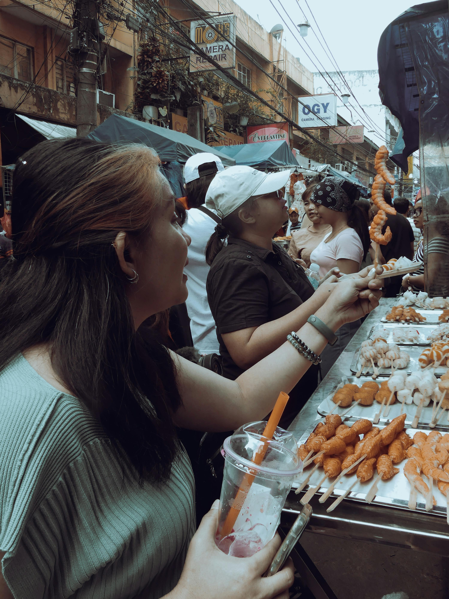

De Filipijnen hebben te maken met verschillende maatschappelijke problemen. Armoede is een groot probleem, vooral in landelijke gebieden, waar veel mensen weinig inkomen hebben en moeilijk toegang krijgen tot goed onderwijs en gezondheidszorg. Ook werkloosheid en lage lonen zorgen ervoor dat veel gezinnen moeite hebben om rond te komen. Daarnaast spelen natuurrampen een grote rol. De Filipijnen worden vaak getroffen door tyfoons, overstromingen en aardbevingen, wat leidt tot schade aan huizen en verlies van levens. Dit maakt het voor veel mensen extra moeilijk om een stabiel bestaan op te bouwen. Verder is er sprake van ongelijkheid en corruptie, waardoor niet iedereen dezelfde kansen krijgt. Deze problemen samen zorgen ervoor dat veel Filipijnen dagelijks moeten vechten voor een beter en veiliger leven.